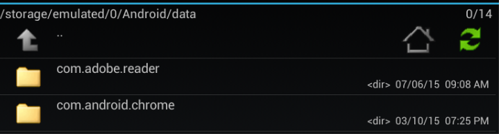
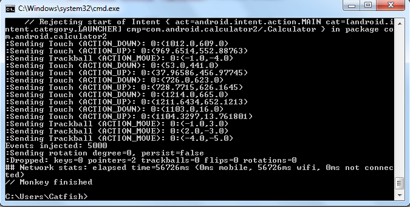

Утилита monkey входит в состав Android SDK. Утилита отправляет на устройство поток псевдослучайных действий пользователя. Параметры командной строки задают количество действий пользователя, соотношение их типов и имя тестируемого пакета
Параметры и примеры на сайте: http://developer.android.com/tools/help/monkey.html
Просмотр справочной информации Monkey
adb shell monkey --help
Синтаксис команды:
adb shell monkey [options] <event-count>
Запуск пакета и отправка 500 псевдослучайных событий
adb shell monkey -p your.package.name -v 500
Имя пакета можно узнать зайдя в папку ../Android/data

Результат проверки

Таблица Command Options Reference
Category (Категория) |
Option (Опции) |
Description |
General |
--help |
справочная информация |
-v |
в командной строке будет увеличивать уровень детализации. |
|
Events |
-s <seed> |
Начальное значение для генератора псевдослучайных чисел. Если вы повторно выполните Monkey с тем же начальным значением, то он будет генерировать ту же самую последовательность событий |
--throttle <milliseconds> |
Вставляет фиксированной задержки между событиями. Вы можете использовать эту опцию, чтобы замедлить Monkey. Если не указан, нет никакой задержки и события генерируются как можно быстрее. |
|
--pct-touch <percent> |
Регулировать процент сенсорных событий. (События прикосновения вниз-вверх действие в одном месте на экране.) |
|
--pct-motion <percent> |
Регулировать процент движения событий. (События движения состоят из вниз действий где-нибудь на экране, ряд псевдослучайных движений, и до события вверх.) |
|
--pct-trackball <percent> |
Регулировать процент трекбол событий. (Трекбол события состоять из одного или более произвольным движениям, иногда сопровождаемым щелчком.) |
|
--pct-nav <percent> |
Регулировать процент "базовых" событий навигации. (События состоят из навигации вверх/вниз/влево/вправо, как от направленного ввода устройство ввода.) |
|
--pct-majornav <percent> |
Регулировать процент "серьезных" событий навигации. (Это навигация событий, которую обычно вызывают действия в пользовательском интерфейсе, такие как: центральная кнопка, 5-позиционная панель, клавишу "назад" или клавишу меню.) |
|
--pct-syskeys <percent> |
Регулировать процент "системных" ключевых событий. (Это ключи, которые, как правило, зарезервированы для использования системой, такие как домой, назад, начало вызова, окончание вызова, или регуляторы громкости.) |
|
--pct-appswitch <percent> |
Регулировать процент активности запуска. Через случайные промежутки времени, Monkey выдаст startActivity() вызов, как способ максимизации охвата всех направлений деятельности в рамках вашего пакета. |
|
--pct-anyevent <percent> |
Регулировать процент других типов событий. Это универсальный lля всех остальных типов событий, таких как нажатие клавиш, другие менее используемые кнопки на устройстве, и так далее. |
|
Constraints |
-p <allowed-package-name> |
Если вы укажите один или несколько пакетов таким образом, Monkey, позволит только системные действия в рамках этих пакетов. Если вашему приложению требуется доступ к действиям в других пакетах (например, чтобы выбрать контакт) Вам необходимо указать эти пакеты. Если Вы не укажете какие-то пакеты, Monkey, позволит системе начать действия во всех пакетах. Чтобы указать несколько пакетов, используйте опцию -p несколько раз — одного параметра -p пакета. |
-c <main-category> |
Если вы укажите одну или несколько категорий таким образом, Monkey, позволит только системный действия, перечисленные в одной из указанных категорий. Если Вы не укажете любой категории, Monkey выберет виды деятельности, перечисленные в категории Intent.CATEGORY_LAUNCHER или Intent.CATEGORY_MONKEY. Чтобы указать несколько категорий, используйте опцию -с несколько раз — одна -с опция в каждой категории. |
|
Debugging (Отладка) |
--dbg-no-events |
Monkey будет выполнить первоначальный запуск в тестовом режиме, но не будет генерировать никаких событий. Для лучших результатов, комбинируйте с опцией -v |
--hprof |
При включении этой опции будет генерировать отчеты профилирования непосредственно перед и после Monkey последовательности событий. Это создаст большие (~5Мб) файлы данных / смешанная, так что используйте с осторожностью. |
|
--ignore-crashes |
Обычно, Monkey останавливается, когда приложение аварийно завершает работу или происходит необработанное исключение. Если Вы укажете эту опцию, то Monkey будет продолжать отправлять события в систему, до тех пор, пока не завершит свою работу. |
|
--ignore-timeouts |
Обычно, Monkey остановится, когда произойдёт ошибка времени ожидания, такая как "приложение не отвечает" диалог. Если Вы укажете эту опцию, то Monkey будет продолжать отправлять события в систему, до тех пор, пока не завершит свою работу. |
|
--ignore-security-exceptions |
Обычно, Monkey остановится, когда произойдёт ошибка, например при попытке запустить активность, которая требует определенных разрешений. Если Вы укажете эту опцию, то Monkey будет продолжать отправлять события в систему, до тех пор, пока не завершит свою работу. |
|
--kill-process-after-error |
Обычно, когда Monkey останавливается из-за ошибки приложения, приложение не отвечает. Когда эта опция установлена, она будет сигнализировать системе, чтобы остановить процесс, в котором произошла ошибка. |
|
--monitor-native-crashes |
Часы для докладов и сбои, происходящие в системе Android машинный код. Если-убить-процесс-после-ошибка, то система остановитс. |
|
--wait-dbg |
Останавливает Monkey выполнять до тех пор, пока отладчик присоединен к нему. |
Пример (test.bat) adb shell monkey -p com.vkontakte.android -v 500 -s 1000 --pct-touch 20 --pct-motion 20 --pct-nav 40 --pct-majornav 60 --pct-syskeys 20 --pct-appswitch 50 --ignore-security-exceptions
Created with the Personal Edition of HelpNDoc: Free HTML Help documentation generator